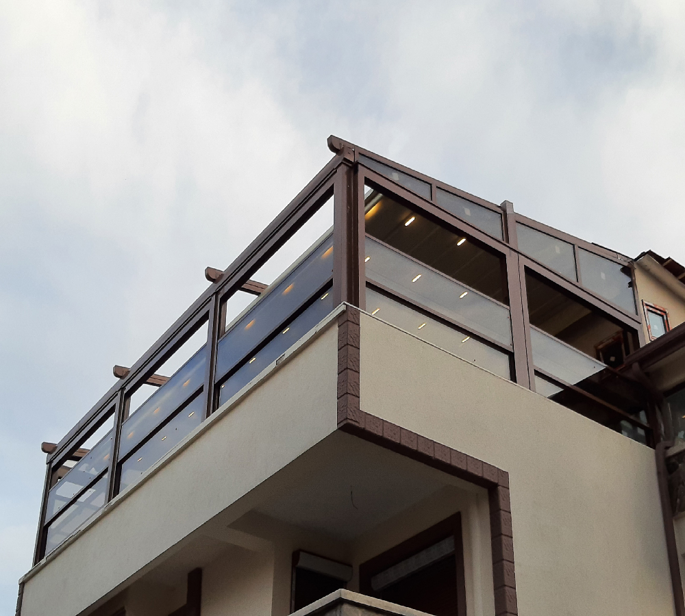
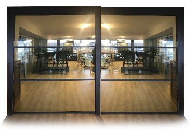

Startseite
Produkte
Guillotine-Systeme
Pergolas
Bioklimatisch
Windbrecher
Reißverschlussjalousien
Wintend
Glasdach
Schiebeglas
Falttür
Panorama
Doppelt verglast
Isolierung
Farbe
Kontaktiere uns
Startseite
Produkte
Bioklimatisch
Pergola
Guillotine-Systeme
Windbrecher
Reißverschlussjalousien
Wintend
Glasdach
Schiebeglas
Falttür
Panorama
Farbe
Isolierung
Kontaktiere uns
GUILLOTINE GLASSYSTEM

Mit seiner fortschrittlichen Technologie und seinen funktionalen Merkmalen macht Doruk Guillotine Glass Systems Wohnräume wie Hotels, Cafés, Restaurants, Residenzen, Terrassen, Winter-/Sommergärten und Einkaufszentren komfortabler und unverzichtbarer. Als Doruk-Gruppe bieten wir Vierjahreszeiten-Wohnräume, in denen Sie Frühling, Herbst oder Winter geräumiger, breiter, heller und damit angenehmer ohne Kälte, Regenwasser oder Schnee genießen können.
Systemfeatures
- Vier Jahreszeiten Wohnraum
- Das Guillotine-System besteht aus vertikal bewegten Glasscheiben.
- Guillotine-Systeme können mit ihrer Reinigungsfunktion sowohl in mehrstöckigen Wohnhäusern als auch in Unternehmen wie Cafés und Restaurants angewendet werden.
- Mit der Fernbedienung können Sie das gesamte System oder ein einzelnes Modul steuern. Mit der Start-Stopp-Technologie können Sie die Bewegung jederzeit stoppen.
Produkte

Einzelglas
-Guillotine
Doppelverglaste
Guillotine
DESIGN UND FUNKTIONALITÄT
- Doruk Guillotine-Glassysteme sorgen für Panorama-Blickwinkel und natürliches Licht bei Tageslichteinfall, indem die 8 mm gehärteten (bruchfest) oder Isolierglasscheiben mit Hilfe eines Motors nach oben/unten bewegt werden.
- Die Guillotine-System-Engine mit RTS-Technologie arbeitet mit der Fernbedienung und die Bewegung kann mit der Start-Stopp-Technologie an der angegebenen Stelle gestoppt werden.
- Das gesamte System oder ein einzelnes Modul kann mit einer Fernbedienung bedient werden.
- Glasprofile, die die Ästhetik und das Sichtfeld minimal beeinträchtigen, das Sichtfeld des Benutzers nicht behindern und mit unbegrenzten Farb- und Holzmusterbeschichtungsoptionen eine perfekte Integrität mit der Außenumgebung bieten.
- Regen- und Windsensoren, die dem System hinzugefügt werden können, erkennen Situationen wie Niederschlag und Sturm, wenn das System eingeschaltet ist und schalten sich automatisch aus.
- Guillotine-Systeme bieten 60% Schalldämmung. Mit Synergie- und Komfortgläsern, die in Doppelglassystemen eingesetzt werden können, lässt sich die Wärmedämmung noch weiter steigern.
- Es arbeitet im Einklang mit Smart-Home-Systemen.
- Unsere Guillotine-Systeme; Schallschutz-, Windwiderstands- und Wasserdichtigkeitsprüfungen wurden von unabhängigen Instituten durchgeführt und verfügen über Zertifikate in europäischen Normen. Das Isolierglassystem hat eine höhere Energieeinsparung, Windbeständigkeit und Wasserdichtigkeit als 8 mm Standardglas.
- Die Option Oberglas bietet die Möglichkeit, auf hohen Böden die Glasscheiben von außen zu reinigen. Außerdem kann bei ausgeschaltetem System der Kippflügel geöffnet und die Umgebung belüftet werden.
SAFETY
- Beim Herunterfahren des Systems wird verhindert, dass Finger zwischen den Glasscheiben eingeklemmt werden. Durch die Einstellung, dass zwischen dem beweglichen Glas und dem feststehenden Glas ein Abstand von 1-2 cm besteht, wird die Gefahr des Fingerklemmens auch in der Parkposition verhindert.
- Guillotine-System bietet mehr Sicherheit als andere Modelle mit Stahlkette (optional).
- Bei Terrassen dient das Guillotine-System bei der Montage als 100 % sicheres Glasgeländer sowie der Fensterfunktion.
- Es bietet unverschlossene Sicherheit mit seinem speziellen Sicherheitsglas- und Profilsystem.
Guillotine-Systeme bieten 60 % Schalldämmung, und die Synergie- und Komfortgläser, die in Isolierglassystemen verwendet werden können, können die Wärmedämmung auf ein noch höheres Niveau steigern.
- Aluminium- und Metallteile werden gemäß Ihrer Bestellung mit statischer Pulverfarbe lackiert.
- Die Farbkarte wird durch das RAL-Code-System bestimmt und eine Bestellung mit dem RAL-Code-System erstellt.